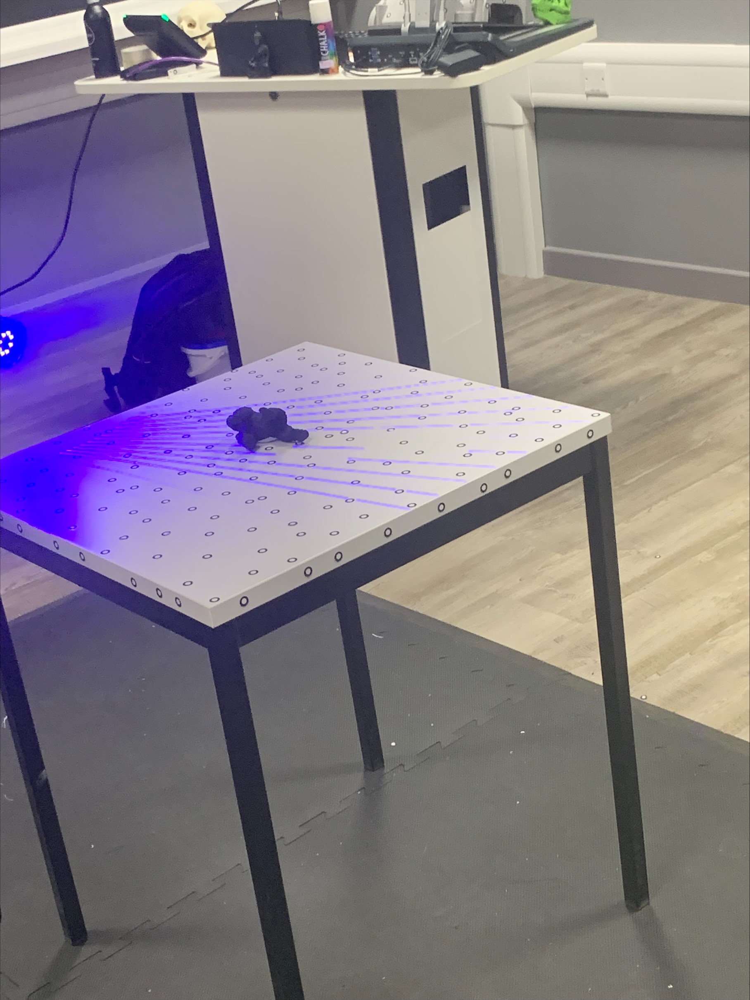

Design

Development process
The first stage of the project process was choosing suitable techniques and technologies to develop the concept into a digital model and then creating a physical model based on the digital model. For this the most suitable options were 3D scanning, 3D modelling, 3D printing and resin production and postproduction. The purpose of using the 3D scanner was to generate a digital model using a physical gorilla, this would save a considerable amount of time in comparison to creating a 3D model from scratch. In order for the 3D scanner to get the most accurate model the gorilla had to be scanned from all of its sides, in the end the use of the 3D scanner was successful as it generated a detailed model of the gorilla. Once the model was completed, the file containing the 3D scans were exported as a stl file so it could be used for the next development stage being the 3D modelling. The software that would be used for the 3D modelling was Blender, the purpose if using 3D modelling was to separate the arms from the model, then add ball joints to the body and add sockets to the body. This process was the longest due to a lack of overall experience of 3D modelling and using Blender combined with the number of vertices that the model made fixing the holes for the ball joints to insert into a long process. The next stage was to get the model 3D printed using PLA as the choice of plastic however, this was unfortunately unable to be completed due to time constraints. This also impacted on using the resin lab, as the aim was to use silicone rubber to give the model an outer skin and in order to do this the 3D printed model would act as the mould, since there was no 3D printed model to use this step was not possible to complete. Overall, the project was somewhat successful as the creation of the virtual model was completed however, the plans to create the physical model were not actualised.
3D scanning
3D scanning is a technique used to capture a 3 dimensional image of a physical object as stated by Haleem, Javaid, Singh, Rab, Suman, Kumar and Khan (2022) although 3D scanning goes beyond what is stated in this definition as it is able to capture a physical object size and dimensions. The way that 3D scanning works is by using lasers as the scanner is able to emit lasers, the light from the lasers reflect off the surface of the object that is being scanned back into the scanner, then measures the time that is taken for the light to be reflected back and determines the distance. After this a software that is connected to the scanner such as Skanect is able to generate a 3D model based on this data. The use of 3D scanning is currently being used in the automotive industry by companies such as Ford, 3D SCANNING TECHNOLOGY HELPS TRANSFORM MICHIGAN CENTRAL STATION (2020) states that 3D scanning has been used to generate models of old car pieces that no longer exist or have documentation. The benefits of using 3D scanning for creating a prototype include high accuracy as a result of the point clouds which are collected by the scanner from the reflected laser lights and digitally represent an objects surface and details. However, there are limitations to using 3D scanning for instance, the surface reflectivity of an object can impact the results, as highly reflective surfaces are able to overwhelm the scanner with their strong reflections in contrast, surfaces that low or non-reflective have a weak reflected light which may not be picked up by the scanner this can result in a model that has missing data points creating an incomplete model. The reason why 3D scanning is suitable for prototype development is that it can generate models without the need to create one manually and will be able to capture the details of the physical model.

3D modelling software
3D modelling software as stated by Bobylev (2017) is used to create a digital model of object, considering the materials, dimensions, stresses, and tolerances which affect the object. The way 3D modelling software works is that the software will provide the user with a variety of basic 3D shapes to use which can then be altered through tools such as extruding and being able to edit the vertices of the shape. Moreover, 3D modelling software also provide tools to sculpt an object by being able to pull, push and smooth the shape in addition, the shape can also be deformed and pinched. An example of a piece of software that is used for 3D modelling is blender. Currently as stated by What is 3D Modeling & What is it used for? | adobe (no date) 3D modelling is being used by architectures and designers as it allows them to create detailed 3D models of landscapes and buildings. One of the benefits that 3D modelling provides is that it allows for better visualisation as compared to a 2D design the model can be seen from multiple angles furthermore, the rendered models can look realistic due to textures and lighting. However, a limitation of using 3D modelling is the barrier to entry, in order to create a high quality model it requires experience of 3D modelling resulting in time needed to spent using the software. The reason why 3D modelling software is used for prototype development is that it can demonstrate a model without the need of making a physical version. This is used in the development of the gorilla model as it can take the model generated by the 3D scanner and can customise it have the ball joints and sockets on the model in order to fulfil the specification requirement about having movement.
3D printing
3D printing is the process of printing a physical object from a 3 dimensional digital model. The way that 3D printing works is that a 3D printer is loaded with a material, most cases it is a type of plastic then a software is used to slice the model into layers which is then translated into instructions that the 3D printer can comprehend and then executed. As stated by Peverini, Lumia, Addamo, Virone, and Fonseca (2023) is having a major impact on many industrial and application sectors, in the aerospace sector 3D printing is being used for the development of thermal and structural parts. An advantages of using 3D printing is that it able to print complex shapes which would be much more difficult to do through techniques such as machining. However, a disadvantage of using 3d printing is that it can take a long time to print due to layer by layer process also, larger scale or more detailed models will take considerably longer to print. The reason why 3D printing is suitable in the process of prototype development is that it is a simple way 3D printing was used in the process of developing the gorilla model as it would be able to create a physical version of the model creating in the 3D modelling process.
Resin production and postproduction
Resin production is the process of creating a type of resin, then the steps to get it ready for it to be used in the production of a physical model and resin postproduction is the steps taken after the resin has been cured. There are many different types of resin such as polyurethane resin, silicone rubber and epoxy casting resin. Moreover, there a multiple types of moulding that can be done using resin such as cut mould and a mould that can be used for silicone rubber and polyurethane resin. However, there are many safety precautions that need to be taken before using resin this includes, wearing gloves, safety glasses and aprons, turning on the extractor and placing it above the work area. Epoxy resin is currently being used in a variety of different industries such as construction with it being used to repair eroded concrete structures due the characteristics of epoxy resin as stated in Properties of epoxy resins for repair and rehabilitation of structures (2017). A benefit of using resin is that it creates durable models and using a resin mould can result in high quality parts. Although the limitations of using resin is that cured model may be brittle depending on the type of resin used furthermore, the use of resin moulds only works if an existing model can be cast. For this project resin production and postproduction was used as it allowed for access to other materials that would be beneficial for the model, mainly the silicone rubber.
Computer aided design
Computer aided design (CAD) as stated by Liu and Li (2022) is a method that allows designers to create designs via the help of computers with an example of a CAD software is fusion 360. The way that CAD software works is by first creating a 2D version of the model which can then become a 3D model by extruding the 2D design, after which this model can be altered through methods similar to that of 3D modelling and can give the designers the ability to be able to insert holes into the model. As stated by BasuMallick (2022) CAD is seeing use in the dental industry with it being used in restorative dental procedures, as through CAD they can create a 3D representation of a patient’s oral structures. The benefits of using CAD include the accuracy of CAD designs as a drawing made using CAD is much more accurate than one made manually. A limitation of using CAD is that it has a focus on function over form meaning that it has a focus on precision modelling resulting in less room for artistic design which ends up with models lacking organic shapes and with limited detail. CAD was not a chosen design option for the gorilla model due to the fact that it would be difficult to create the desired organic shapes for the model in fusion 360, whereas blender is a better alternative for this project.
Haptic sculpting
Haptic sculpting utilises haptic technology to create the feeling of touch in order to sculpt an object in a 3 dimensional environment. The way haptic sculpting works is through the use of a haptic pen which is connected to the modelling software, in which the pen is able to interact with the model which is virtual clay. Haptic technologies are able to replicate real world sculpting as pushing the pen into the object will create indentations in the object and provide resistance feedback. Currently, as stated by VASILjEVIĆ, Santoši, Obradović, Popkonstantinović, Budak, and Obradović (2023) haptic sculpting can be used for the preservation of architectural heritage with haptic sculpting was used to add protect to the 3D model of the original sculpture. One advantage of using haptic sculpting is that it provides natural feeling to sculpting which can make the users feel a greater sense of control over when sculpting. A disadvantage of using haptic sculpting is that there is a learning curve, as it will take time for users to learn how to sculpt, get used to the haptic software and the feedback. Haptic sculpting was not chosen for this project as there was limited skill in using this technology, meaning it would take up too much time learning how to use it.
Motion capture
Motion capture is the process of recording physical movement and making a digital animation from it. The way in which motion capture works is by having a person wear a mocap suit which has a number of markers on it and then cameras are used to track the markers in order to capture the movement from the suit. For motion capture there is software that is able to capture facial expressions such as Faceware Studio, other software such as Rokoko is used to capture the body and others that are able to capture both. Before the recording session can begin the markers must be set up on the suit correctly then, both the suit and the cameras need to be calibrated. As stated by Nogueira (2011) motion capture has seen a large amount of use in the gaming, movie, and animation industry as it allows for facial and body animations for digital characters, while this quote is over a decade old it is still relevant. One of the benefits of using motion capture is the realistic movement that it can capture as it is able to obtain the weight distribution and facial expressions from the person using. Motion capture is limited by the fact that it can be expensive to use with the cost of the studio, cameras, suits with markers and software adding up to a large sum. The reason why motion capture was not used in the designing of the gorilla model is that motion capture is used for creating digital animations whereas the model is a physical prototype.
Laser cutting
Laser cutting as stated by Khatak (2022) utilises thermal energy for cutting of materials, like titanium, stainless steel, and aluminium without making contact. The way laser cutting works is through the use of a focused laser beam that is able to either melt the material or vaporise it. Laser cutting is used in a variety of industries such as the music industry as laser cutting is used to cut panels out of wood for guitars and violins as stated by Team Xometry (2023). One of the benefits of using laser cutting is that it is extremely precise resulting in the pieces cut being the same measurement as the designed versions. A limitation of using laser cutting is that some materials such as polytetrafluoroethylene at high temperatures can release harmful gases which limits the types of materials that can be use by the laser cutter. The reason why laser cutting can be used for prototype development is that it is able to cut materials such metal and wood accurately and is more efficient than manually cutting. The reason why laser cutting was not included in this project was that there was no material that were required to be laser cut thus there was no need to use it.
References
Haleem, A., Javaid, M., Singh, R.P., Rab, S., Suman, R., Kumar, L. and Khan, I.H., 2022. Exploring the potential of 3D scanning in Industry 4.0: An overview. International Journal of Cognitive Computing in Engineering, 3, pp.161-171.
3D SCANNING TECHNOLOGY HELPS TRANSFORM MICHIGAN CENTRAL STATION (2020) 3D Scanning Technology Helps Transform Michigan Central Station | Ford Media Center. Available at: https://media.ford.com/content/fordmedia/fna/us/en/news/2020/10/29/3d-scanning-technology-michigan-central-station.html (Accessed: 07 May 2024).
Nogueira, P., 2011, November. Motion capture fundamentals. In Doctoral Symposium in Informatics Engineering (Vol. 303).
Bobylev, D., 2017. Comparison of 3d modelling software.
What is 3D Modeling & What is it used for? | adobe (no date) What Is 3D Modeling. Available at: https://www.adobe.com/products/substance3d/discover/what-is-3d-modeling.html (Accessed: 07 May 2024).
Liu, H. and Li, F., 2022. Computer-Aided Design of Ceramic Product Modeling based on NURBS Method. Computer-Aided Design and Applications, 19, pp.17-22.
BasuMallick, C. (2022) What is CAD (Computer Aided Design)? Definition, Types, and Applications, Spiceworks.com. Available at: https://www.spiceworks.com/tech/devops/articles/what-is-cad/#:~:text=A%20CAD%20file%2C%20produced%20by,representations%20for%20goods%20under%20development. (Accessed: 07 May 2024).
Peverini, O.A., Lumia, M., Addamo, G., Virone, G. and Fonseca, N.J., 2023. How 3D-printing is changing RF front-end design for space applications. IEEE Journal of Microwaves, 3(2), pp.800-814.
VASILjEVIĆ, I., Santoši, Ž., Obradović, M., Popkonstantinović, B., Budak, I. and Obradović, R., 2023. Copyright Protection of 3D Digitized Sculptures by Use of Haptic Device for Adding Local-Imperceptible Bumps. Tehnički vjesnik, 30(6), pp.2001-2008.
Properties of epoxy resins for repair and rehabilitation of structures (2017) The Constructor. Available at: https://theconstructor.org/building/epoxy-resin-repair-rehabilitation-structures/17010/. (Accessed: 07 May 2024).
Khatak, P., 2022. Laser cutting technique: A literature review. Materials today: proceedings, 56, pp.2484-2489.
Team Xometry,. (2023) How laser cutting is used in different industries, Xometrys RSS. Available at: https://www.xometry.com/resources/sheet/how-is-laser-cutting-used-in-industry/. (Accessed: 07 May 2024).
Materials
PLA
Polylactic acid (PLA) is made from resources that are renewable and organic such as corn starch and is a compostable material. PLA sees use for plastic bottles, food packaging and disposable cutlery though for this project PLA is able to be used as the material for 3D printing the model. One of the benefits of using PLA include the fact that is does not release any toxic fumes and it is also biodegradable. A limitation of using PLA is that it absorbs moisture from the air which can result it in becoming brittle. The reason why PLA was chosen for this project is that it is a material that is easy to print using the 3D printer and that it is the cheapest material to use as it approximately £12-£30 per kilogram.
Silicone rubber
Silicone rubber as stated by Ueki, Oshida, Sando, and Seko (2022) is rubber material that possess superior weatherability, heat resistance, and has chemical resistance in comparison to natural and synthetic rubbers. Silicone rubber has many uses in the aerospace industry as it can be used for making space suit fabrics, windshields and abrasion resistant coatings as stated by Varied uses of silicone rubber (no date). One of the benefits of using silicone rubber is that it is a durable material with it being resistant to wear and tear. A limitation of using silicone rubber is that it is depending on the silicone rubber formula it may become brittle when exposed to sunlight. The reason for using silicone rubber for this project is that it would give the gorilla model a more flesh-like texture and would provide protection for the model, this would be done by placing a silicon skin over the body of 3D printed the gorilla model cover all of the body except from the hands, feet, and head.
Fur, paint and dye
The use of fur for the gorilla model is to make it more realistic with it being placed on the head, arms, legs and back of the model. The way the fur will be attached is by puncturing small holes into the silicone rubber outer skin and inserting the fur into these holes and gluing it in place. The purpose of the dye is to be able to colour the fur and the paint is for the 3D printed model to get the correct colours for the gorilla’s body and using the dry brushing technique will allow for more detail to be added.
Composite material
A composite material is often made up of 2 or more materials that are of different physical and chemical properties, with it often being used to build a variety of different things ranging from bathtubs to racing car bodies. Composite material offers benefits such as flexibility as it can be moulded into complex shapes and that composite materials have the potential to be more environmentally friendly due to it being able to use recycled materials such as plastic. However, there are limitations to using composite materials, one example of this as stated in What are some challenges and opportunities of using composite materials for engineering design? (2023), is that composite materials are complex and often require the use of specialised equipment and techniques for processing which results in composite materials being expensive. The reason why this material is not suitable for this project is due to the fact that it is the most expensive option for a material with it being approximately £45-£100 per kilogram, as there is a limited budget it would put constraints on other aspects of the project.
References
What are some challenges and opportunities of using composite materials for engineering design? (2023), Composite Materials for Engineering Design: Challenges and Opportunities. Available at: https://www.linkedin.com/advice/3/what-some-challenges-opportunities-using-composite (Accessed: 07 May 2024).
Ueki, Y., Oshida, M., Sando, H. and Seko, N., 2022. Bleed-out suppression of silicone rubber by electron beam crosslinking. Radiation Physics and Chemistry, 193, p.110002.
Varied uses of silicone rubber (no date) Varied Uses of Silicone Rubber, Uses of Silicone Rubber, Silicone Rubber Uses. Available at: https://www.industrialrubbergoods.com/articles/uses-of-silicone-rubber.html (Accessed: 07 May 2024).